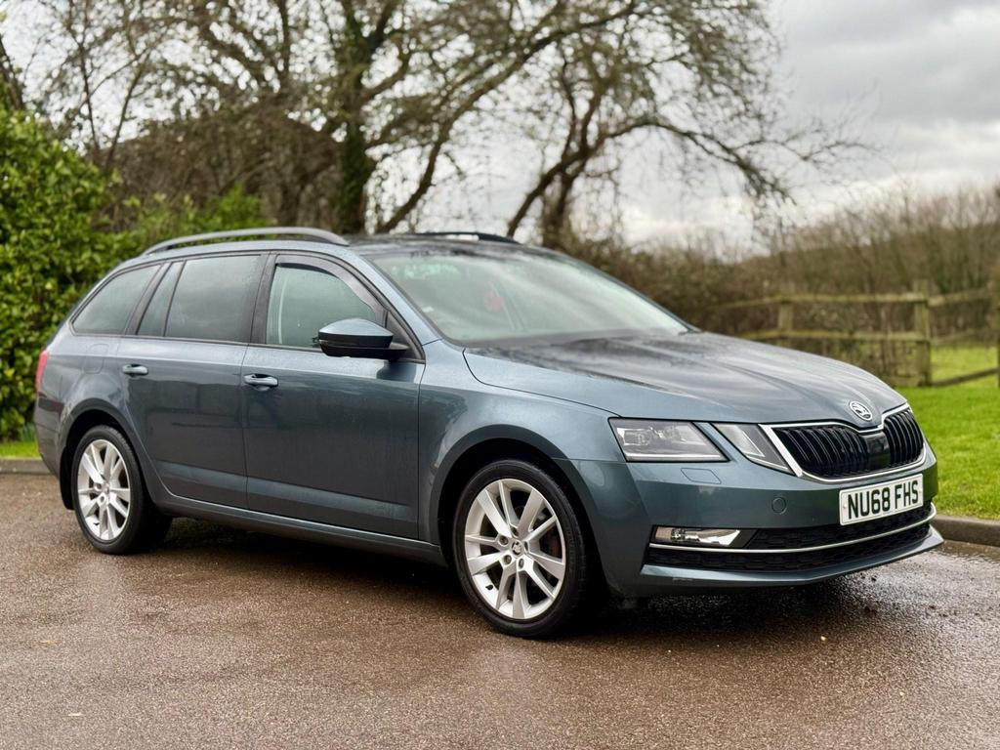

Skoda Octavia
Estate/Hatchback
2017 - 2020 (3rd Generation Facelift)
£8,000 - £15,000 used
Euro NCAP Rating:
★★★★★
5/5
Trim Levels
S (Base Trim)
- 16-inch alloy wheels
- 8-inch touchscreen infotainment
- DAB radio
- Bluetooth connectivity
- Air conditioning
- Electric front windows
SE
- Dual-zone climate control
- Rear parking sensors
- Cruise control
- Driver fatigue sensor
- Auto-dimming rear-view mirror
- Umbrella under passenger seat
SE L
- 17-inch alloy wheels
- Alcantara/leather upholstery
- Full LED headlights
- Privacy glass
- Satellite navigation
- Front parking sensors
Laurin & Klement (Top Trim)
- 18-inch alloy wheels
- Full leather upholstery
- Heated front seats
- Canton sound system
- Adaptive cruise control
- Electrically adjustable driver's seat
Engine Options
Petrol
- 1.0 TSI 115PS
- 1.4 TSI 150PS
- 1.5 TSI 150PS (later models)
- 2.0 TSI 190PS (rare)
- 2.0 TSI 230PS (vRS)
- 2.0 TSI 245PS (vRS)
Diesel
- 1.6 TDI 115PS
- 2.0 TDI 150PS
- 2.0 TDI 184PS
- 2.0 TDI 184PS (vRS)
Transmission
- 5-speed manual (1.0 TSI)
- 6-speed manual
- 7-speed DSG automatic
Positive Points
- Exceptional boot space (590 litres hatch/610 litres estate)
- Excellent value for money
- Comfortable and refined ride quality
- High build quality and durability
- Wide engine range to suit various needs
- Practical touches like umbrellas and ticket holders
Negative Points
- Conservative styling may be too understated for some
- Not as engaging to drive as some rivals
- Some early DSG gearbox reliability issues
- Basic interior plastics in lower trim levels
- 1.6 TDI engine can feel underpowered
Reliability Rating:
8.8/10
Gareth's Comments
Practicality
Boot Space (Hatch)
590 Litres
Boot Space (Estate)
610 Litres
Seats Folded (Estate)
1,740 Litres
Fuel Economy (2.0 TDI)
55-60 mpg
Fuel Economy (1.5 TSI)
45-50 mpg
Motorway Efficiency
50-60 mpg (diesel)
Towing Capacity
Up to 2,000 kg
The facelifted third-generation Skoda Octavia represents one of the best all-around family car packages on the used market. Its combination of space, comfort, and value is hard to beat, while the controversial split headlight design of the facelift gives it a more distinctive appearance than the pre-facelift model.
For a driving pattern focused on weekend use, holidays and primarily motorway/A-road journeys, the Octavia is absolutely in its element. The 2.0 TDI 150PS engine offers the perfect balance of power and economy for this usage, delivering around 55-60 mpg on motorway runs while providing enough torque for effortless overtaking and hill climbing. The estate version's enormous 610-litre boot expands to a van-like 1,740 litres with seats folded, making it perfect for family holidays and weekend activities. On long motorway journeys, the Octavia's comfortable ride, excellent sound insulation (especially in SE L and above), and supportive seats really come into their own, reducing fatigue significantly. The adaptive cruise control on higher trim models is particularly valuable for longer trips.
The SE L trim hits the sweet spot in the range, offering the best balance of equipment and value with features like satellite navigation, Alcantara upholstery, and full LED headlights that are particularly useful for country A-roads at night. If your budget allows, the 7-speed DSG automatic makes motorway driving even more relaxed, though the manual gearboxes are also excellent with a precise, easy shift action.
Gareth's Rating